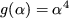
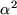
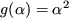

In Section 2.3, we gave an example. An SGIF file for this example is given in Figure 5.4.
The problem is again given the name DOC. The two types of nontrivial groups were assigned the names GTYPE1/2 by the previous SDIF file, each with group-type variables ALPHA. The function and derivatives values of the second group type, , all use some product of , so an auxiliary variable is assigned to hold this value, the variable being local to the group type. Likewise, the derivatives of the first group type,  both use some product of 2.0, so another auxiliary variable is assigned to hold its value.
We gave a second example in Section 2.4. An SGIF file for this
example is given in Figure 5.5 on page  . The
problem is again given
the name DOC2. The single nontrivial group type was given the
name SINE by the previous SDIF file, with the group-type
variable ALPHA and the single parameter P. The function
and second derivatives both depend on the product of the
parameter
with the sine of the group type variable,
so an auxiliary variable is assigned to hold this value.
. The
problem is again given
the name DOC2. The single nontrivial group type was given the
name SINE by the previous SDIF file, with the group-type
variable ALPHA and the single parameter P. The function
and second derivatives both depend on the product of the
parameter
with the sine of the group type variable,
so an auxiliary variable is assigned to hold this value.